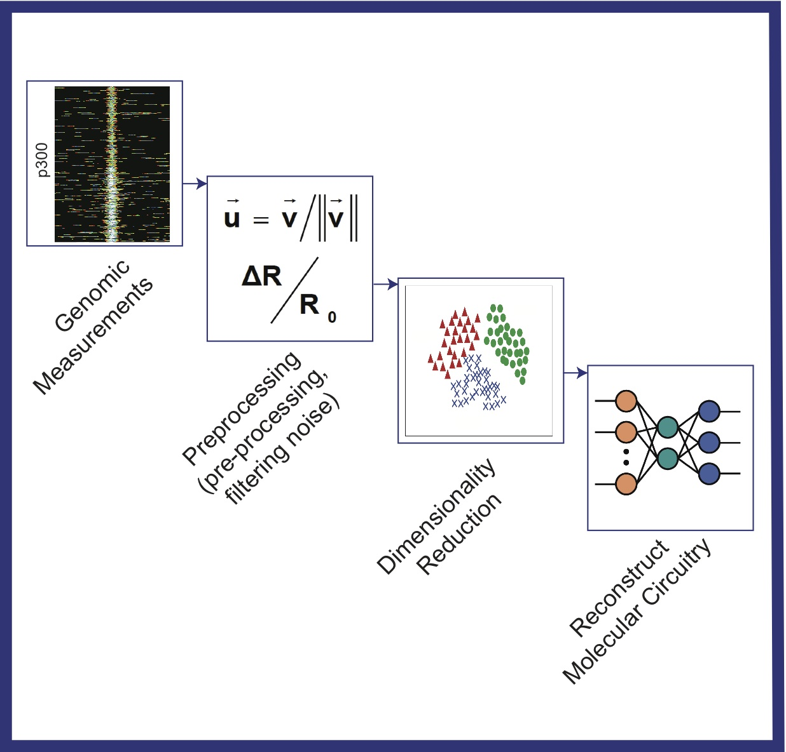

|  | Progress in biological science will require adopting systems methods, as engineering has already found useful and necessary in dealing with complexity. We will develop computational methods to (a) learn about the characteristics of genomic signals using theories in signal processing, (b) reduce the dimensionality of the genomic data using machine learning techniques, and (c) produce an integrated, multi-layer circuit of the transcriptional response using methods such as Bayesian networks. |
G. Vahedi, B. Faryabi, J.-F. Chamberland, A. Datta, E. R. Dougherty, “Sampling- Rate-Dependent Probabilistic Boolean Networks”, Journal of Theoretical Biology, vol. 261, no. 4, pp. 463-477, December 2009.
G. Vahedi, B. Faryabi, J.-F. Chamberland, A. Datta, and E. R. Dougherty, “Optimal Intervention Strategies for Cyclic Therapeutic Methods”, IEEE Transactions on Biomedical Engineering, Vol. 56, No. 2, 281-291, February 2009.
G. Vahedi, I. Ivanov, E. R. Dougherty, “Inference of Boolean Networks under Constraint on Bidirectional Gene Relationships”, Journal of IET Systems Biology, Vol. 3, No. 3, 191202, May 2009.
G. Vahedi, B. Faryabi, J.-F. Chamberland, A. Datta, and E. R. Dougherty, “Intervention in Gene Regulatory Networks via a Stationary Mean-First-Passage-Time Control Policy”, IEEE Transactions on Biomedical Engineering, Vol. 55, No. 10, 2319 - 2331, October 2008.